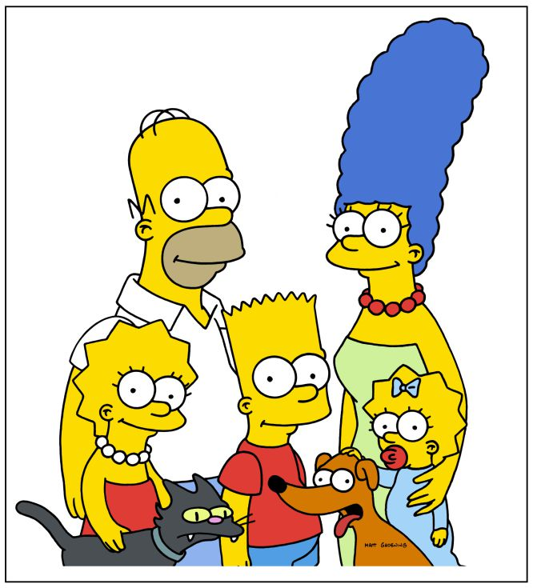

<ion-header>
  <ion-toolbar>
      <ion-buttons slot="start">
        <ion-back-button defaultHref="/"></ion-back-button>
      </ion-buttons>
    <ion-title>Avatar</ion-title>
    <ion-buttons slot="end">
      <ion-avatar>
        
      </ion-avatar>  
    </ion-buttons>
  </ion-toolbar>
</ion-header>

<ion-content>
<ion-chip color="primary" mode="ios" outline="true">
  <ion-avatar>
    
  </ion-avatar>
  <ion-label>Chip Avatar</ion-label>
</ion-chip>

<ion-list *ngFor="let item of avatar">
  <ion-item>
    <ion-avatar slot="end">
      
    </ion-avatar>
    <ion-label>{{item.nombre}}</ion-label>
  </ion-item>
</ion-list>
</ion-content>
 